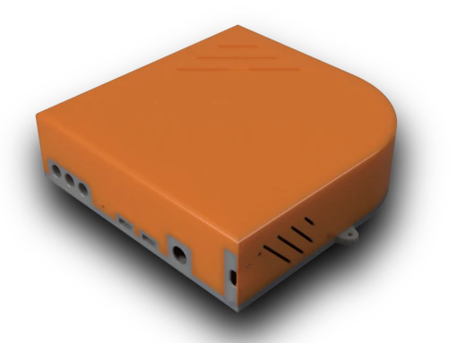
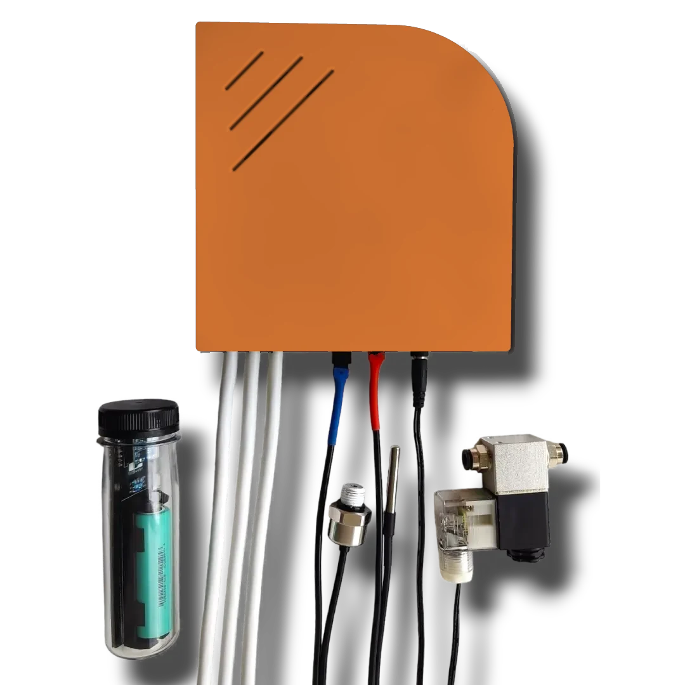
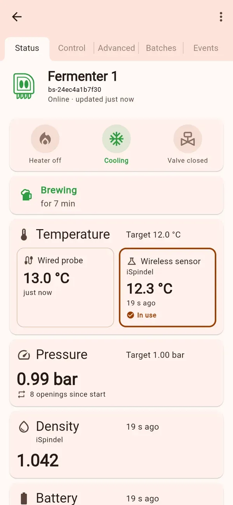

Temperature control
Heats and cools to your target through two smart plugs, with a rest period that protects the fridge compressor. Choose the wired probe or the iSpindel as the sensor; the other one is the backup.
BrewSpider switches your heater and fridge through smart plugs, holds pressure with a built-in spunding valve, reads your iSpindel, and keeps working when the Wi-Fi doesn't.

One box for the whole fermentation
BrewSpider reads the temperature and pressure in your fermenter and decides, on the device itself, when to heat, cool or vent.

Heats and cools to your target through two smart plugs, with a rest period that protects the fridge compressor. Choose the wired probe or the iSpindel as the sensor; the other one is the backup.
A built-in spunding valve: set a target and BrewSpider vents in short pulses to hold it, for naturally carbonated beer straight from the fermenter. Near your vessel's maximum it vents regardless.
All control runs on the device. If your Wi-Fi or internet drops, BrewSpider keeps regulating, stores its readings and sends them once it is back online.

The BrewSpider app
Live readings, targets and a zoomable trend chart on Android, or in any web browser. iOS is on the way.
How it works
Fit the temperature probe, pressure sensor and valve. Plug your heater and fridge into smart plugs.
In the app, choose Pair with QR code, hold the button for 5 seconds and pick your Wi-Fi. The app does the rest over Bluetooth.
Enter the temperature and pressure you want. Brewing starts as a new batch, named however you like.
Adding an iSpindel or a brewing app? Step-by-step in the manual
Who makes it
We design the electronics, the firmware and the app ourselves, with safety first: the device keeps your brew under control even when the internet doesn't.
No. Temperature and pressure control run on the device. Without Wi-Fi it keeps regulating and stores its readings, then sends them when it is back online.
Anything you can plug into a supported smart plug: [SUPPORTED SMART PLUGS].
Pressure-rated fermenters with a [FITTING SIZE] port. You enter your vessel's maximum pressure, and BrewSpider vents before it gets there.
No. The wired probe is enough for temperature control. An iSpindel adds gravity and battery readings, and can be the main temperature sensor.
We are preparing pre-orders. Leave your email below and you will be the first to know.
One email when pre-orders open, and the occasional build update. Unsubscribe any time.
Questions? contact@brewspider.com